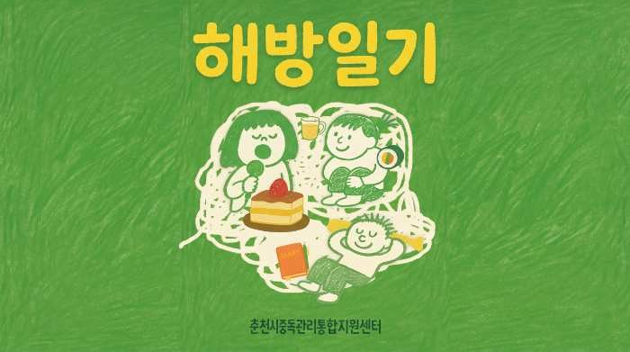

알라틴, 성인아이, 그리고 알아넌으로 살아가는 ‘마련이’의 이야기
EP 01 · 마련이 · 21:15
02 — 웹 디자인
알코올 중독을 겪은 사람들의 이야기를 인터뷰 형식으로 담아내는 기록 프로젝트.

술 때문에 무너졌던 시간과, 거기서 빠져나오는 시간. 그 이야기를 당사자의 목소리로 남기는 인터뷰 프로젝트입니다.
춘천시중독관리통합지원센터와 협업해 서포터즈로 참여했고, 기획과 인터뷰, 촬영, 편집을 모두 직접 맡았습니다.
마련이, 백합임, 물티슈, 이누. 네 사람을 만나 여덟 편으로 엮었습니다.
알라틴, 성인아이, 그리고 알아넌으로 살아가는 ‘마련이’의 이야기
EP 01 · 마련이 · 21:15
고마운 나에게, 나를 찾아가는 ‘마련이’의 여정
EP 02 · 마련이 · 20:14
죽고 싶었던 밤들을 지나, 비로소 죽음을 잘 준비하기까지 (팟캐스트)
EP 03 · 백합임 · 18:17
죽고 싶었던 밤들을 지나, 비로소 죽음을 잘 준비하기까지
EP 04 · 백합임 · 21:28
알코올 중독자의 자식들이 어떤 고통 속에서 자라는지, 낱낱이 말하고 싶었어요 · 1편
EP 05 · 물티슈 · 20:29
알코올 중독자의 자식들이 어떤 고통 속에서 자라는지, 낱낱이 말하고 싶었어요 · 2편
EP 06 · 물티슈 · 23:48
“막상 성인이 되니까, 그 술병이랑 너무 친해져 있더라고요” · 1편
EP 07 · 이누 · 20:36
“내 인생에서 해방은 죽음이라고 생각했어요” · 2편
EP 08 · 이누 · 23:50